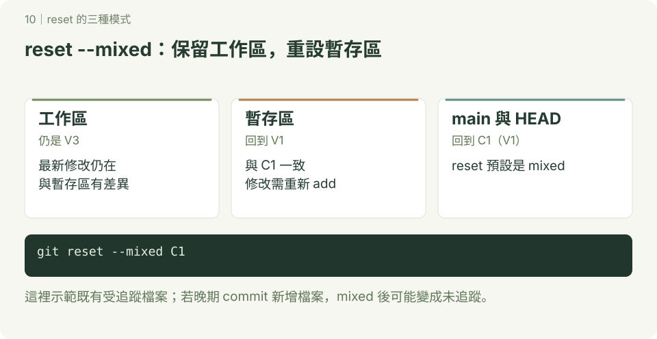
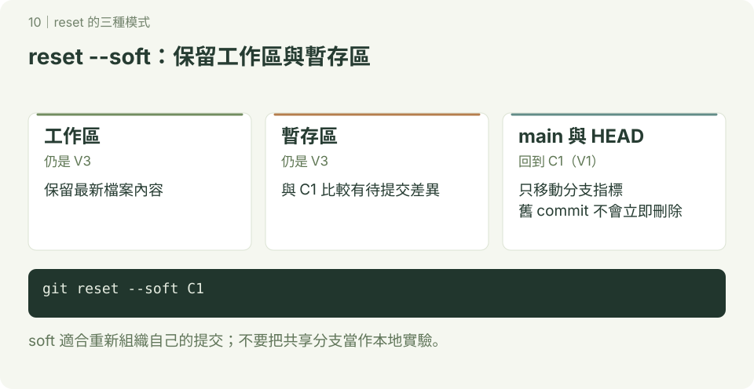
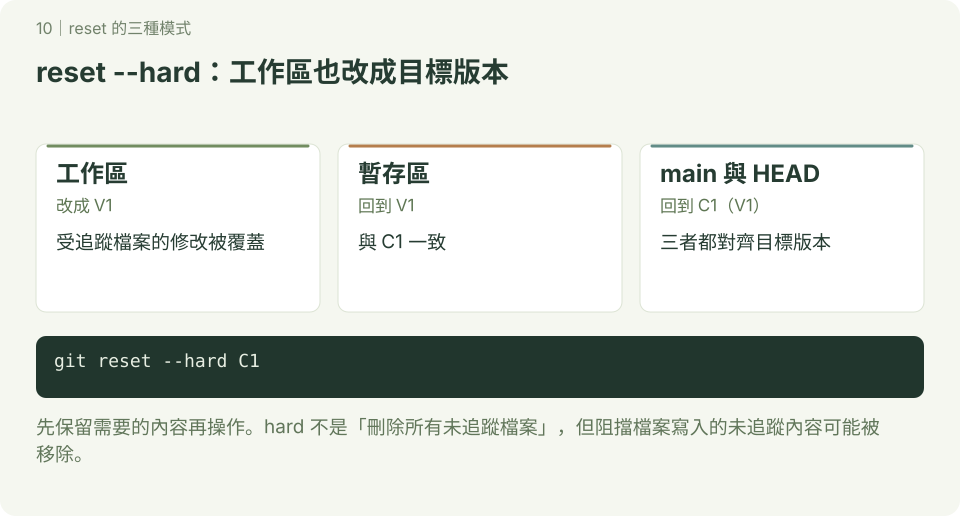

reset 的三種模式
圖解已重畫為 SVG；圖中使用 main 與簡化 commit 名稱，舊範例若使用 master，主要分支的概念相同。互動版見 Git 圖解教室。
注意 小心會修改工作目錄內的檔案和內容
回到前面記錄點(commit)
有3種模式 --hard,--soft,--mixed
預設模式(—mixed)
回到指定的commit,先前commit拆解的檔案,進入尚未commit的工作區

操作與輸出
$ touch i1.html
$ git add i1.html
$ git commit -m “增加i1.html”
$ touch i2.html
$ git add i2.html
$ git commit -m “增加i2.html”
$ git log --oneline
______________________________________
fa7a416 (HEAD -> master) 增加i2.html
f6679ed 增加i1.html
3c24296 修改.gitignore
cca5666 增加h.cer檔案和hfloder目錄
cd28b1e 增加.gitignore
d2600eb 新增f1.html,f2.html 新增f3.html
059c439 “加入新增d1.html,d2.html,d3.html,d3.html加入內容“
bfe5b85 新增c1.html,c2.html,c3.html,c3.html加入內容
63d60eb 建立b3.html
58718cc 建立b2.html
6421101 建立b1.html
454c953 建立3個a檔案
$ git reset 3c24296 #回到3c24296
$ git status
________________________________________
On branch master
Untracked files:
(use "git add <file>..." to include in what will be committed)
i1.html
i2.html
nothing added to commit but untracked files present (use "git add" to track)
$ git log --oneline
_____________________________________
3c24296 (HEAD -> master) 修改.gitignore
cca5666 增加h.cer檔案和hfloder目錄
cd28b1e 增加.gitignore
d2600eb 新增f1.html,f2.html 新增f3.html
059c439 “加入新增d1.html,d2.html,d3.html,d3.html加入內容“
bfe5b85 新增c1.html,c2.html,c3.html,c3.html加入內容
63d60eb 建立b3.html
58718cc 建立b2.html
6421101 建立b1.html
454c953 建立3個a檔案
- HEAD回到3c24296
- 先前commit拆解的檔案回到尚未commit的工作區域
回復到原來的commit
commit 實際是沒被拆解！只要記的先前的commit識別碼.就可以回復
操作與輸出
$ git reset fa7a416 #復原到最先的commit
$ git log --oneline
_______________________________
fa7a416 (HEAD -> master) 增加i2.html
f6679ed 增加i1.html
3c24296 修改.gitignore
cca5666 增加h.cer檔案和hfloder目錄
cd28b1e 增加.gitignore
d2600eb 新增f1.html,f2.html 新增f3.html
059c439 “加入新增d1.html,d2.html,d3.html,d3.html加入內容“
bfe5b85 新增c1.html,c2.html,c3.html,c3.html加入內容
63d60eb 建立b3.html
58718cc 建立b2.html
6421101 建立b1.html
454c953 建立3個a檔案- 回復到原先的commit
soft模式(--soft)
回到指定的commit,先前commit拆解的檔案,進入尚未commit的staged區

操作與輸出
$ git log --oneline
_____________________________
fa7a416 (HEAD -> master) 增加i2.html
f6679ed 增加i1.html
3c24296 修改.gitignore
cca5666 增加h.cer檔案和hfloder目錄
cd28b1e 增加.gitignore
d2600eb 新增f1.html,f2.html 新增f3.html
059c439 “加入新增d1.html,d2.html,d3.html,d3.html加入內容“
bfe5b85 新增c1.html,c2.html,c3.html,c3.html加入內容
63d60eb 建立b3.html
58718cc 建立b2.html
6421101 建立b1.html
454c953 建立3個a檔案
$ git reset --soft 3c24296
$ git status
____________________________________
On branch master
Changes to be committed:
(use "git restore --staged <file>..." to unstage)
new file: i1.html
new file: i2.html
$ git log --oneline
_______________________________________
3c24296 (HEAD -> master) 修改.gitignore
cca5666 增加h.cer檔案和hfloder目錄
cd28b1e 增加.gitignore
d2600eb 新增f1.html,f2.html 新增f3.html
059c439 “加入新增d1.html,d2.html,d3.html,d3.html加入內容“
bfe5b85 新增c1.html,c2.html,c3.html,c3.html加入內容
63d60eb 建立b3.html
58718cc 建立b2.html
6421101 建立b1.html
454c953 建立3個a檔案
- 回到commit 3c24296
- 被拆解的commit檔案,進入staged內
回復到原來的commit
commit 實際是沒被拆解！只要記的先前的commit識別碼.就可以回復
操作與輸出
$ git reset fa7a416 #復原到最先的commit
$ git log --oneline
_______________________________
fa7a416 (HEAD -> master) 增加i2.html
f6679ed 增加i1.html
3c24296 修改.gitignore
cca5666 增加h.cer檔案和hfloder目錄
cd28b1e 增加.gitignore
d2600eb 新增f1.html,f2.html 新增f3.html
059c439 “加入新增d1.html,d2.html,d3.html,d3.html加入內容“
bfe5b85 新增c1.html,c2.html,c3.html,c3.html加入內容
63d60eb 建立b3.html
58718cc 建立b2.html
6421101 建立b1.html
454c953 建立3個a檔案- 回復到原先的commit
hard 模式（--hard）
以下與 soft、mixed 分別比較，從已提交至 fa7a416、工作區乾淨的起點開始。回到較早的 3c24296 時，分支與暫存區都會改成目標版本，工作區的受追蹤檔案也會被覆蓋。

先保留需要的修改，再在自己的練習專案操作；本圖用 C1／V1 簡化表示目標 commit。
bash
git reset --hard 3c24296
git status
git log --oneline預期：HEAD 與目前分支回到 3c24296；status 顯示工作區乾淨。這個舊範例在目標版本還沒有 i1.html、i2.html，因此兩個已追蹤檔案會被移除。
不指定目標的 git reset --hard 是回到目前 HEAD 的版本，不會自行選擇更早的 commit。hard 也不是刪除所有未追蹤檔案的指令。
git reflog
可以查詢到所有commit的動作記錄！就可以查到先前被拆解的commit識別碼
操作與輸出
$ git reflog
__________________________________
fa7a416 (HEAD -> master) HEAD@{0}: reset: moving to fa7a416
3c24296 HEAD@{1}: reset: moving to 3c24296
fa7a416 (HEAD -> master) HEAD@{2}: reset: moving to fa7a416
3c24296 HEAD@{3}: reset: moving to 3c24296
fa7a416 (HEAD -> master) HEAD@{4}: reset: moving to fa7a416
3c24296 HEAD@{5}: reset: moving to 3c24296
fa7a416 (HEAD -> master) HEAD@{6}: commit: 增加i2.html
f6679ed HEAD@{7}: commit: 增加i1.html
3c24296 HEAD@{8}: commit: 修改.gitignore
cca5666 HEAD@{9}: commit: 增加h.cer檔案和hfloder目錄
cd28b1e HEAD@{10}: commit: 增加.gitignore
d2600eb HEAD@{11}: commit (amend): 新增f1.html,f2.html
aa7edbe HEAD@{12}: commit (amend): 新增f1.html,f2.html
fcf905a HEAD@{13}: commit: 新增f1.html
059c439 HEAD@{14}: reset: moving to 059c439
59b62a4 HEAD@{15}: commit: 新增H1.html
0a7a99e HEAD@{16}: commit (amend): 重新修改commit說明
c1a6019 HEAD@{17}: reset: moving to c1a6019
d4e1b24 HEAD@{18}: reset: moving to d4e1b24
c1a6019 HEAD@{19}: reset: moving to c1a6019
d4e1b24 HEAD@{20}: commit: 刪除e1.html,e2.html,e3.html
c1a6019 HEAD@{21}: reset: moving to c1a6019
6633812 HEAD@{22}: reset: moving to 6633812
c1a6019 HEAD@{23}: commit: 新增e1.html,e2.html,e3.html
059c439 HEAD@{24}: reset: moving to 059c439
6633812 HEAD@{25}: reset: moving to 6633812